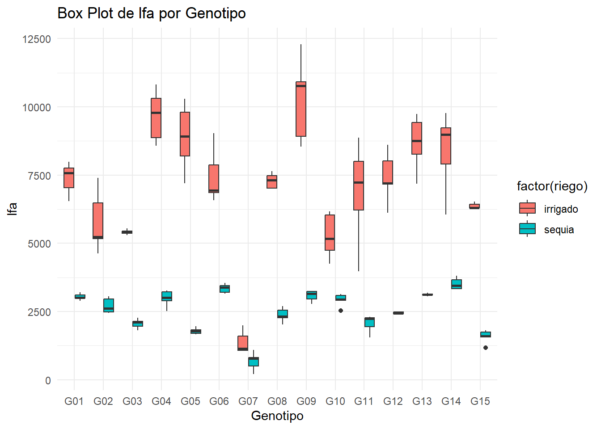

1 + 1[1] 2Quarto enables you to weave together content and executable code into a finished document. To learn more about Quarto see https://quarto.org.
When you click the Render button a document will be generated that includes both content and the output of embedded code. You can embed code like this:
1 + 1[1] 2You can add options to executable code like this
[1] 4The echo: false option disables the printing of code (only output is displayed).
#FB
library(readxl)
data <- read_excel("eficiencia de riego papa.xlsx")
head(data)# A tibble: 6 × 18
riego geno block bloque spad_29 spad_83 rwc_84 op_84 leafdw stemdw rootdw
<chr> <chr> <dbl> <chr> <dbl> <dbl> <dbl> <dbl> <dbl> <dbl> <dbl>
1 sequia G01 2 II 56.3 41.1 61.5 -2.43 13.3 14.9 3.83
2 sequia G02 4 IV 52.7 47.9 63.2 -3.03 9.42 8.63 2.1
3 irrigado G01 3 III 49.2 41.6 67.7 -2.5 18.2 24.2 3.16
4 sequia G02 1 I 55.5 44.2 64.9 -2.4 8.84 6.58 2
5 irrigado G03 2 II 58.2 32.6 74.5 -2.27 14.6 12.6 1.83
6 irrigado G04 5 V 43.5 37.8 74.0 -2.37 19.8 17.5 2.83
# ℹ 7 more variables: tubdw <dbl>, biomdw <dbl>, hi <dbl>, ttrans <dbl>,
# wue <dbl>, twue <dbl>, lfa <dbl>modelo <- lm(formula = lfa ~ block + geno + riego + riego*geno, data = data)
anova(modelo)Analysis of Variance Table
Response: lfa
Df Sum Sq Mean Sq F value Pr(>F)
block 1 1148369 1148369 2.068 0.153
geno 14 261742780 18695913 33.668 <2e-16 ***
riego 1 788562704 788562704 1420.068 <2e-16 ***
geno:riego 14 108153220 7725230 13.912 <2e-16 ***
Residuals 119 66080618 555299
---
Signif. codes: 0 '***' 0.001 '**' 0.01 '*' 0.05 '.' 0.1 ' ' 1 install.packages("ggplot2", repos = "https://cloud.r-project.org/")Installing package into 'C:/Users/Usuario/AppData/Local/R/win-library/4.4'
(as 'lib' is unspecified)package 'ggplot2' successfully unpacked and MD5 sums checked
The downloaded binary packages are in
C:\Users\Usuario\AppData\Local\Temp\RtmpKSxbrM\downloaded_packageslibrary (ggplot2)
ggplot(data, aes(x = block, y = lfa, fill = block)) +
geom_boxplot(outlier.colour = "red", outlier.shape = 16, outlier.size = 2) + # Personaliza los outliers
geom_jitter(width = 0.2, alpha = 0.5) + # Añade puntos de datos con un poco de dispersión
labs(title = "Box Plot de lfa por Block", x = "Block", y = "lfa") +
theme_minimal()Warning: Continuous x aesthetic
ℹ did you forget `aes(group = ...)`?Warning: The following aesthetics were dropped during statistical transformation: fill.
ℹ This can happen when ggplot fails to infer the correct grouping structure in
the data.
ℹ Did you forget to specify a `group` aesthetic or to convert a numerical
variable into a factor?
#Grafico
ggplot(data, aes(x = factor(geno), y = lfa, fill = factor(riego))) +
geom_boxplot() +
labs(title = "Box Plot de lfa por Genotipo", x = "Genotipo", y = "lfa") +
theme_minimal()
#Clase 2 de analisis de datos
install.packages("pkgdown", repos = "https://cloud.r-project.org/")Installing package into 'C:/Users/Usuario/AppData/Local/R/win-library/4.4'
(as 'lib' is unspecified)package 'pkgdown' successfully unpacked and MD5 sums checked
The downloaded binary packages are in
C:\Users\Usuario\AppData\Local\Temp\RtmpKSxbrM\downloaded_packages# Run once to configure your package to use and deploy pkgdown
usethis::use_pkgdownfunction (config_file = "_pkgdown.yml", destdir = "docs")
{
check_is_package("use_pkgdown()")
check_installed("pkgdown")
use_build_ignore(c(config_file, destdir, "pkgdown"))
use_git_ignore(destdir)
config <- pkgdown_config(destdir)
config_path <- proj_path(config_file)
write_over(config_path, yaml::as.yaml(config))
edit_file(config_path)
invisible(TRUE)
}
<bytecode: 0x0000029391ca1958>
<environment: namespace:usethis>library(agricolae)
data # A tibble: 150 × 18
riego geno block bloque spad_29 spad_83 rwc_84 op_84 leafdw stemdw rootdw
<chr> <chr> <dbl> <chr> <dbl> <dbl> <dbl> <dbl> <dbl> <dbl> <dbl>
1 sequia G01 2 II 56.3 41.1 61.5 -2.43 13.3 14.9 3.83
2 sequia G02 4 IV 52.7 47.9 63.2 -3.03 9.42 8.63 2.1
3 irrigado G01 3 III 49.2 41.6 67.7 -2.5 18.2 24.2 3.16
4 sequia G02 1 I 55.5 44.2 64.9 -2.4 8.84 6.58 2
5 irrigado G03 2 II 58.2 32.6 74.5 -2.27 14.6 12.6 1.83
6 irrigado G04 5 V 43.5 37.8 74.0 -2.37 19.8 17.5 2.83
7 irrigado G01 1 I 57.4 42.5 72.7 -1.77 15.0 15.3 2.28
8 irrigado G05 4 IV 56.1 35.9 72.8 -2.33 19.9 14.6 3.65
9 sequia G06 2 II 61 57.5 59.8 -3.23 19.9 21.2 4.04
10 sequia G05 1 I 60.3 41.8 50.8 -2.87 12.3 11.1 4.17
# ℹ 140 more rows
# ℹ 7 more variables: tubdw <dbl>, biomdw <dbl>, hi <dbl>, ttrans <dbl>,
# wue <dbl>, twue <dbl>, lfa <dbl>data# A tibble: 150 × 18
riego geno block bloque spad_29 spad_83 rwc_84 op_84 leafdw stemdw rootdw
<chr> <chr> <dbl> <chr> <dbl> <dbl> <dbl> <dbl> <dbl> <dbl> <dbl>
1 sequia G01 2 II 56.3 41.1 61.5 -2.43 13.3 14.9 3.83
2 sequia G02 4 IV 52.7 47.9 63.2 -3.03 9.42 8.63 2.1
3 irrigado G01 3 III 49.2 41.6 67.7 -2.5 18.2 24.2 3.16
4 sequia G02 1 I 55.5 44.2 64.9 -2.4 8.84 6.58 2
5 irrigado G03 2 II 58.2 32.6 74.5 -2.27 14.6 12.6 1.83
6 irrigado G04 5 V 43.5 37.8 74.0 -2.37 19.8 17.5 2.83
7 irrigado G01 1 I 57.4 42.5 72.7 -1.77 15.0 15.3 2.28
8 irrigado G05 4 IV 56.1 35.9 72.8 -2.33 19.9 14.6 3.65
9 sequia G06 2 II 61 57.5 59.8 -3.23 19.9 21.2 4.04
10 sequia G05 1 I 60.3 41.8 50.8 -2.87 12.3 11.1 4.17
# ℹ 140 more rows
# ℹ 7 more variables: tubdw <dbl>, biomdw <dbl>, hi <dbl>, ttrans <dbl>,
# wue <dbl>, twue <dbl>, lfa <dbl>colnames(data) [1] "riego" "geno" "block" "bloque" "spad_29" "spad_83" "rwc_84"
[8] "op_84" "leafdw" "stemdw" "rootdw" "tubdw" "biomdw" "hi"
[15] "ttrans" "wue" "twue" "lfa" # Asegúrate de que la variable de tratamiento es un factor
data$riego <- as.factor(data$riego)
# Ajuste del modelo
modelo <- aov(spad_29 ~ riego, data = data) # Cambia spad_29 por otra variable si es necesario
summary(modelo) Df Sum Sq Mean Sq F value Pr(>F)
riego 1 13 12.87 0.526 0.47
Residuals 148 3623 24.48 tukey_result <- HSD.test(modelo, "riego", group = TRUE)
print(tukey_result)$statistics
MSerror Df Mean CV MSD
24.48249 148 56.36487 8.778479 1.59671
$parameters
test name.t ntr StudentizedRange alpha
Tukey riego 2 2.794659 0.05
$means
spad_29 std r se Min Max Q25 Q50 Q75
irrigado 56.65773 4.97906 75 0.5713433 43.5 64.9 53.6 57.2 60.6
sequia 56.07200 4.91670 75 0.5713433 43.9 65.5 53.2 56.5 59.4
$comparison
NULL
$groups
spad_29 groups
irrigado 56.65773 a
sequia 56.07200 a
attr(,"class")
[1] "group"options(repos = c(CRAN = "https://cloud.r-project.org/"))# Cargar librerías si es necesario
library(ggplot2)
# Crear el boxplot
ggplot(data, aes(x = factor(riego), y = spad_83)) + # Asegúrate de que "spad_29" sea el nombre correcto
geom_boxplot(fill = "lightblue", color = "darkblue") +
xlab("Tratamiento de Riego") +
ylab("Valores de SPAD 29") +
ggtitle("Distribución de SPAD 83 por Tratamientos de Riego") +
theme_minimal() # Elimina el argumento base_rect_size que no está definido
# Asegúrate de que los paquetes están cargados
library(readxl)
library(ggplot2)
data <- read_excel("eficiencia de riego papa.xlsx")
head(data)# A tibble: 6 × 18
riego geno block bloque spad_29 spad_83 rwc_84 op_84 leafdw stemdw rootdw
<chr> <chr> <dbl> <chr> <dbl> <dbl> <dbl> <dbl> <dbl> <dbl> <dbl>
1 sequia G01 2 II 56.3 41.1 61.5 -2.43 13.3 14.9 3.83
2 sequia G02 4 IV 52.7 47.9 63.2 -3.03 9.42 8.63 2.1
3 irrigado G01 3 III 49.2 41.6 67.7 -2.5 18.2 24.2 3.16
4 sequia G02 1 I 55.5 44.2 64.9 -2.4 8.84 6.58 2
5 irrigado G03 2 II 58.2 32.6 74.5 -2.27 14.6 12.6 1.83
6 irrigado G04 5 V 43.5 37.8 74.0 -2.37 19.8 17.5 2.83
# ℹ 7 more variables: tubdw <dbl>, biomdw <dbl>, hi <dbl>, ttrans <dbl>,
# wue <dbl>, twue <dbl>, lfa <dbl># Verificar la estructura
str(data)tibble [150 × 18] (S3: tbl_df/tbl/data.frame)
$ riego : chr [1:150] "sequia" "sequia" "irrigado" "sequia" ...
$ geno : chr [1:150] "G01" "G02" "G01" "G02" ...
$ block : num [1:150] 2 4 3 1 2 5 1 4 2 1 ...
$ bloque : chr [1:150] "II" "IV" "III" "I" ...
$ spad_29: num [1:150] 56.3 52.7 49.2 55.5 58.2 43.5 57.4 56.1 61 60.3 ...
$ spad_83: num [1:150] 41.1 47.9 41.6 44.2 32.6 37.8 42.5 35.9 57.5 41.8 ...
$ rwc_84 : num [1:150] 61.5 63.2 67.7 64.9 74.5 ...
$ op_84 : num [1:150] -2.43 -3.03 -2.5 -2.4 -2.27 -2.37 -1.77 -2.33 -3.23 -2.87 ...
$ leafdw : num [1:150] 13.28 9.42 18.22 8.84 14.55 ...
$ stemdw : num [1:150] 14.87 8.63 24.19 6.58 12.63 ...
$ rootdw : num [1:150] 3.83 2.1 3.16 2 1.83 2.83 2.28 3.65 4.04 4.17 ...
$ tubdw : num [1:150] 19.8 17.7 38 13.5 51.1 ...
$ biomdw : num [1:150] 51.8 37.8 83.6 30.9 80.2 ...
$ hi : num [1:150] 0.45 0.43 0.45 0.44 0.64 0.61 0.41 0.57 0.05 0.51 ...
$ ttrans : num [1:150] 4.5 3.54 8.39 2.9 7.37 ...
$ wue : num [1:150] 11.51 10.69 9.97 10.65 10.88 ...
$ twue : num [1:150] 4.4 4.99 4.53 4.65 6.94 6.23 3.51 5.55 0.54 5.57 ...
$ lfa : num [1:150] 2900 2619 7579 2450 5413 ...### Gráfico en ggplot2
ggplot(data, aes(x = geno, y = lfa, fill = riego)) +
geom_col(position = position_dodge()) +
geom_text(aes(label = round(lfa, 1)), position = position_dodge(0.9), vjust = -0.5) +
labs(x = "Geno", y = "LFA", fill = "Riego") +
theme_minimal() +
theme(axis.text.x = element_text(angle = 45, hjust = 1))
install.packages("emmeans")Installing package into 'C:/Users/Usuario/AppData/Local/R/win-library/4.4'
(as 'lib' is unspecified)package 'emmeans' successfully unpacked and MD5 sums checked
The downloaded binary packages are in
C:\Users\Usuario\AppData\Local\Temp\RtmpKSxbrM\downloaded_packageslibrary(emmeans)Welcome to emmeans.
Caution: You lose important information if you filter this package's results.
See '? untidy'